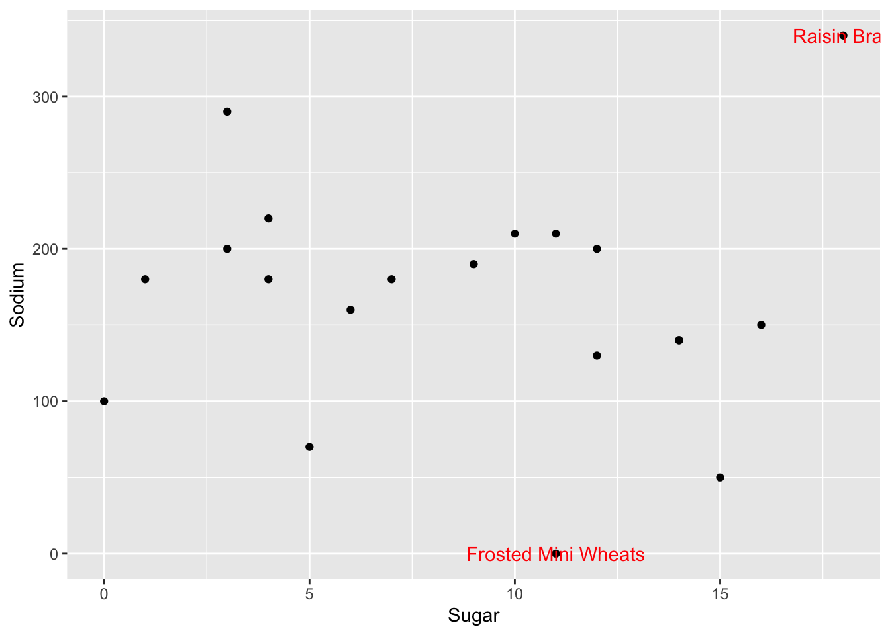

library(tidyverse)
library(ggplot2)
library(readxl)
library(summarytools)
library(ggrepel)
knitr::opts_chunk$set(echo = TRUE, warning=FALSE, message=FALSE)Keith Martin Challenge 5
challenge_5
cereal
Introduction to Visualization
Challenge Overview
For this challenge, I decided to use the cereal data set. This data set was already very tidy and did not really require any data cleaning.
Read in data
I read in the below data and displayed the first five rows as a header. As you can see, the data is split into the name of the cereal, the amount of sodium, the amount of sugar and whether or not it is an “Adult” cereal or “Child” cereal.
cereal<-read_csv("_data/cereal.csv")
head(cereal,5)# A tibble: 5 × 4
Cereal Sodium Sugar Type
<chr> <dbl> <dbl> <chr>
1 Frosted Mini Wheats 0 11 A
2 Raisin Bran 340 18 A
3 All Bran 70 5 A
4 Apple Jacks 140 14 C
5 Captain Crunch 200 12 C I changed A to Adult and C to Child just so that the data set was more clear.
cereal<-cereal%>%
mutate(Type = recode(Type, "A"= "Adult", "C"= "Child"))
head(cereal)# A tibble: 6 × 4
Cereal Sodium Sugar Type
<chr> <dbl> <dbl> <chr>
1 Frosted Mini Wheats 0 11 Adult
2 Raisin Bran 340 18 Adult
3 All Bran 70 5 Adult
4 Apple Jacks 140 14 Child
5 Captain Crunch 200 12 Child
6 Cheerios 180 1 ChildAs you can see below, there we’re four columns and 20 rows. This was a very small data set and did not require much changing for the visualizations.
colnames(cereal)[1] "Cereal" "Sodium" "Sugar" "Type" nrow(cereal)[1] 20ncol(cereal)[1] 4Briefly describe the data
I included the basic summary statistics with some condensed visualizations. This provides some useful summary statistics to get a better idea of distribution of the data. As you can see, the data set is relatively short, so not much tidying was required.
print(summarytools::dfSummary(cereal,
plain.ascii = FALSE,
style = "grid",
graph.magnif = 0.70, ),
method = 'render',
table.classes = 'table-condensed')Data Frame Summary
cereal
Dimensions: 20 x 4Duplicates: 0
| No | Variable | Stats / Values | Freqs (% of Valid) | Graph | Valid | Missing | |||||||||||||||||||||||||||||||||||||||||||||||||||||||
|---|---|---|---|---|---|---|---|---|---|---|---|---|---|---|---|---|---|---|---|---|---|---|---|---|---|---|---|---|---|---|---|---|---|---|---|---|---|---|---|---|---|---|---|---|---|---|---|---|---|---|---|---|---|---|---|---|---|---|---|---|---|
| 1 | Cereal [character] |
|
|
 |
20 (100.0%) | 0 (0.0%) | |||||||||||||||||||||||||||||||||||||||||||||||||||||||
| 2 | Sodium [numeric] |
|
15 distinct values |  |
20 (100.0%) | 0 (0.0%) | |||||||||||||||||||||||||||||||||||||||||||||||||||||||
| 3 | Sugar [numeric] |
|
15 distinct values |  |
20 (100.0%) | 0 (0.0%) | |||||||||||||||||||||||||||||||||||||||||||||||||||||||
| 4 | Type [character] |
|
|
 |
20 (100.0%) | 0 (0.0%) |
Generated by summarytools 1.0.1 (R version 4.2.2)
2023-04-05
Tidy Data (as needed)
I grouped the data by sodium and sugar. Initially, I did not think that the Type was a helpful data point, but I included it later in the bivariate visualization.
cereal%>%
group_by(Cereal)%>%
select(Sodium, Sugar)# A tibble: 20 × 3
# Groups: Cereal [20]
Cereal Sodium Sugar
<chr> <dbl> <dbl>
1 Frosted Mini Wheats 0 11
2 Raisin Bran 340 18
3 All Bran 70 5
4 Apple Jacks 140 14
5 Captain Crunch 200 12
6 Cheerios 180 1
7 Cinnamon Toast Crunch 210 10
8 Crackling Oat Bran 150 16
9 Fiber One 100 0
10 Frosted Flakes 130 12
11 Froot Loops 140 14
12 Honey Bunches of Oats 180 7
13 Honey Nut Cheerios 190 9
14 Life 160 6
15 Rice Krispies 290 3
16 Honey Smacks 50 15
17 Special K 220 4
18 Wheaties 180 4
19 Corn Flakes 200 3
20 Honeycomb 210 11Univariate Visualizations
I created bins for sugar. I decided 2mg bins we’re probably the best visualization since all of them contained around less than 20mgs of sugar.
bins_sugar<- round((max(cereal$Sugar) - min(cereal$Sugar))/2)
bins_sugar[1] 9ggplot(cereal, aes(x= Sugar))+
geom_histogram(bins = bins_sugar)
I included 25mg bins for the sodium because the range was larger and most we’re over 100mgs. As you can see the majority of the cereals we’re high in both sodium and sugar. Later, I will use a bivariate box plot to determine if there are any patterns between adult cereal and childrens cereal.
bins_sodium<- round((max(cereal$Sodium) - min(cereal$Sodium))/25)
bins_sodium[1] 14ggplot(cereal, aes(x= Sodium))+
geom_histogram(bins = bins_sodium)
Bivariate Visualization(s)
As you can see on the below box chart, the average amount of sugar in children cereal is higher than that of adult cereal, but the adult cereal cover a larger range. However, it would be interesting to know how these cereals were categorized and what constitutes an adult/child cereal.
ggplot(cereal, aes(Type, Sugar)) +
geom_boxplot()+
labs(title = "Sugar by Type")
I have included the bivariate scatter plot to see if there was any clear correlation. It seems that there is no significant pattern between the types of cereal and their sugar/sodium amounts.
ggplot(cereal, aes(x=Sugar, y=Sodium, col = Type)) +
geom_point()
###Outlier Function
is_outlier <- function(x) {
return(x < quantile(x, 0.25) - 1.5 * IQR(x) | x > quantile(x, 0.75) + 1.5 * IQR(x))
}I borrowed this outlier function from the solutions as it will be very helpful for similar types of analysis. When integrated into a scatter-plot, it specifies which are upper and lower outliers. As you can see from the below plots, Raisin Bran is the upper outlier and Frosted Mini-Wheats is the lower.
cereal%>%
mutate(outlier_sug=is_outlier(Sugar),
outlier_sod=is_outlier(Sodium),
outlier_lab=if_else(outlier_sug | outlier_sod, Cereal, NA_character_)) %>%
ggplot(aes(Sugar,Sodium))+
geom_point()+
geom_text(aes(label=outlier_lab),col="red")